Verzia 1.1 · október 2026
Subten je určený pre osoby staršie ako 18 rokov.
Vitajte v používateľskej príručke aplikácie Subten — kouča pre rekompozíciu tela pre iPhone a Apple Watch. Subten spája zapisovanie jedla (AI skenovanie fotografií, čiarové kódy, vyhľadávanie), kalorické a makro ciele z vášho profilu so sledovaním trendu váhy, tréningový modul, hlbokú integráciu s Apple Health a AI mentora.
Príručka pokrýva celú aplikáciu: od vytvorenia účtu a úvodného rozhovoru cez každú kartu a funkciu až po predplatné, súkromie a riešenie problémov. Je to návod typu ako na to: pri každej funkcii nájdete, na čo slúži, ako s ňou krok za krokom pracovať a čo vám aplikácia zobrazuje a prečo.
Nepredpokladajú sa žiadne predchádzajúce znalosti o výžive. Všade, kde sa aplikácia opiera o nejaký pojem (kalorický deficit, makrá, dostupnosť energie, trend váhy), ho príručka stručne vysvetlí zrozumiteľným jazykom.
Príručku môžete čítať dvoma spôsobmi:
| Časť | Obsah |
|---|---|
| I — Predstavenie Subtenu | Čo je Subten, kľúčové pojmy (energetický model, ciele a kalibrácia, Free vs Premium), mapa obrazoviek. |
| II — Začíname | Vytvorenie účtu, možnosti prihlásenia, 6-krokový onboarding, nastavenie prvého dňa. |
| III — Päť kariet | Jedna kapitola na každú kartu: Dnes, Jedlo, Tréning, Progres, Tréner. |
| IV — Ciele a trend váhy | Ako Subten nastavuje vaše kalorické a makro ciele, kalibrácia, čas do cieľa a vstavané stratégie (Cheat day, Refeed deň, Diétna pauza, Plateau). |
| V — Apple Watch a skratky | Aplikácia pre Watch, komplikácie, akčné tlačidlo (Action Button) a skratky Siri. |
| VI — Apple Health | Čo Subten číta a zapisuje, prepínače pre jednotlivé typy, zdravotné upozornenia. |
| VII — Premium a predplatné | Free vs Premium, predplatné a skúšobná doba v App Store, obnovenie nákupov. |
| VIII — Nastavenia, súkromie a účet | Profil, pripomienky, export/import dát, súhlas s AI, zmazanie účtu. |
| IX — Riešenie problémov a FAQ | Časté problémy a ich riešenia. |
| Príloha | Slovník pojmov. |
Kapitoly o obrazovkách (časť III) začínajú časťou Na čo slúži a potom opisujú obrazovku, jej funkcie a podľa potreby časté chyby a obmedzenia.
Neproporcionálne písmo označuje niečo, čo píšete.Poznámka: Rozhranie Subtenu je dostupné v šiestich jazykoch: slovenčine, češtine, angličtine, nemčine, poľštine a maďarčine. Táto príručka používa slovenské rozhranie; české a anglické vydanie príručky používajú príslušné lokalizované označenia. Používatelia s nemeckým, poľským alebo maďarským rozhraním dostanú anglické vydanie príručky.
Subten je iOS aplikácia (so sprievodnou aplikáciou pre Apple Watch) na rekompozíciu tela — spaľovanie tuku, budovanie svalov alebo oboje naraz. Jej slogan: „Jedlo, tréning a regenerácia na jednom mieste.“ Pod tým sa skrýva premyslený engine:
Subten je určený pre dospelých: aplikácia počas onboardingu vynucuje vekovú hranicu 18+.
Subten používa na každej obrazovke jediný, zámerne jednoduchý energetický vzorec:
Zostáva = Denný cieľ − Zjedené
Váš denný cieľ už zohľadňuje vašu plánovanú aktivitu. Na rozdiel od mnohých kalorických aplikácií cvičenie nenafukuje váš zostávajúci rozpočet: tréning vám štandardne „nezarobí“ na jedlo navyše. Aktivita z Apple Health sa zobrazuje len pre informáciu. Iba keď váš nameraný pohyb jasne prekročí plán, aplikácia rozšíri denný cieľ, zobrazený ako Cieľ + Pohyb navyše. Tým sa predchádza klasickej pasci dvojitého počítania, keď optimistické odhady cvičenia vymažú váš deficit.
Vaše denné ciele vychádzajú zo štandardného odhadu: rovnica Mifflin–St Jeor vynásobená aktivitným multiplikátorom, upravená podľa vášho cieľa a tempa. Takýto odhad je len približný; skutočný vývoj ukáže trend vašej váhy, ktorý Subten počíta z vážení a jednorazové výkyvy pri tom odfiltruje. Zhruba prvé dva týždne, kým nemáte dosť zapísaných dní a vážení, karta Dnes zobrazuje kalibračný banner. V tejto verzii sa ciele samy neprepočítavajú — keď sa vaša váha výrazne zmení, aktualizujte ju v Nastavenia → Profil a ciele. Časť IV vysvetľuje pravidlá a bezpečnostné poistky podrobne.
Váš tréningový plán riadi vaše výživové ciele (tréningové dni môžu mať iné ciele ako dni odpočinku — pozri typy dní nižšie). To, čo Apple Health nameria, slúži na porovnanie reality s plánom, nie na jeho prepisovanie minútu po minúte.
Každý deň má svoj typ — Sila, Kardio, Odpočinok alebo Vlastný — zobrazený ako štítok na karte Jedlo. Typy dní umožňujú sacharidové cyklovanie: denný cieľ sa môže podľa typu dňa líšiť. Špeciálne dni nastavené stratégiami a režimami (cheat day, refeed, plateau protokol, choroba, dovolenka) sa spolu s niekoľkými dňami po nich nezapočítavajú do rozpoznania plateau, aby napríklad jeden plánovaný „vysoký“ deň neskreslil trend.
Základný cyklus je zadarmo: zapisovanie jedla vyhľadávaním, čiarovým kódom a ručne, karta Dnes, tréningová karta Môj plán, sledovanie pokroku, synchronizácia s Apple Health, pripomienky a export/import dát. Premium odomkne AI funkcie (skenovanie fotografií, skenovanie etikiet, jedálničky, AI mentora na karte Tréner) a plný tréningový modul (Posilňovňa, Šport). Kapitola 12.1 obsahuje úplné porovnanie.
Aplikácia má päť kariet:
| Karta | Na čo slúži |
|---|---|
| Dnes | Váš deň na jeden pohľad: energetický kruh, rýchle akcie, kroky, voda, spánok a regenerácia, dnešný tréning a jedlá. |
| Jedlo | Denník jedla: zapisovanie, úprava a plánovanie jedál; AI jedálniček a nákupný zoznam. |
| Tréning | Váš tréningový plán, knižnica cvikov, aktívny tréning s časovačom odpočinku, osobné rekordy. |
| Progres | Graf váhy a trendu, zloženie tela, telesné miery, séria vážení, Foto progres. |
| Tréner | AI mentor: chat, denné a týždenné vyhodnotenia, jedálniček, nákupný zoznam. |
Do Nastavení sa dostanete cez ikonu ozubeného kolieska na karte Dnes.
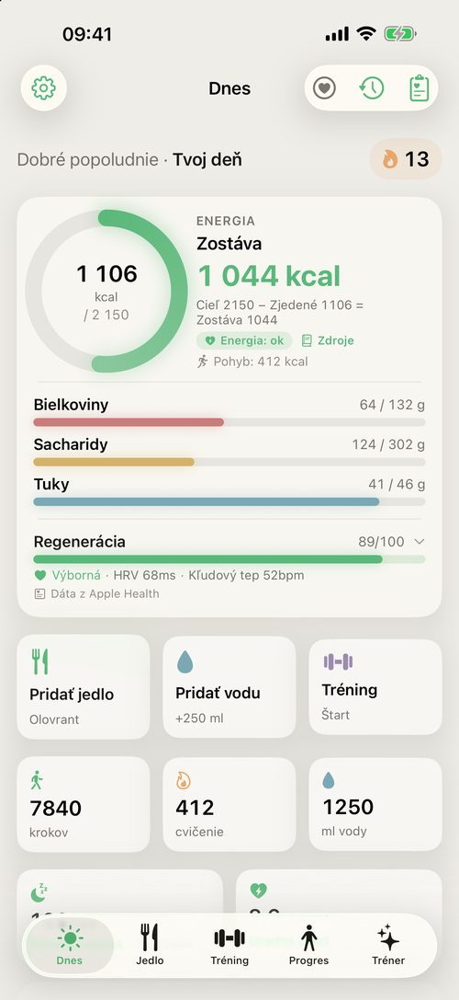
Táto časť vás prevedie od inštalácie aplikácie po prvý plne nastavený deň.
Pri prvom spustení Subten zobrazí prihlasovaciu obrazovku. Účet môžete vytvoriť tromi spôsobmi:
| Spôsob | Poznámky |
|---|---|
| E-mail + heslo | Klasická registrácia; e-mail potvrdíte. |
| Prihlásiť sa cez Apple | Najrýchlejšie na iPhone; skutočný e-mail môžete skryť. |
| Pokračovať s Google | Používa váš účet Google. |
Skôr než sa prihlásite alebo zaregistrujete akýmkoľvek spôsobom (Apple, Google aj e-mail), musíte začiarknuť súhlas s Podmienkami používania a Zásadami ochrany súkromia.
Zabudli ste heslo? Ťuknite na Zabudol som heslo?, zadajte svoj e-mail a postupujte podľa odkazu v správe na obnovenie — otvorí aplikáciu priamo na obrazovke nového hesla.
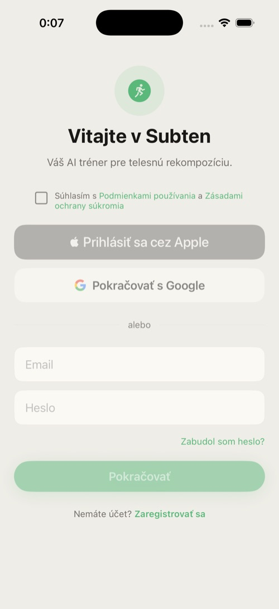
Onboarding je 6-krokový rozhovor s indikátorom postupu (Krok X / 6). Od kroku 3 sa môžete vrátiť tlačidlom Späť; krok 5 možno preskočiť.
Upozornenie: Subten je len pre dospelých. Výber dátumu narodenia neprijme dátum, podľa ktorého by ste mali menej ako 18 rokov.
Krok 1 — Vitajte. Aplikácia sa predstaví. Zobrazí sa aj tip pre iPhone 15 Pro a novšie: Akčné tlačidlo si môžete priradiť skratke Pridať jedlo (menu jedla) alebo Naskenovať jedlo (fotoaparát); tlačidlo Otvoriť Nastavenia vás prenesie do nastavení iOS.
Krok 2 — Profil. Zvoľte pohlavie, nastavte dátum narodenia, výšku (120–220 cm), aktuálnu váhu a cieľovú váhu (obe 35–200 kg). Z týchto údajov vychádza počiatočný odhad kalórií.
Krok 3 — Úroveň aktivity. Vyberte z možností Sedavý, Ľahká aktivita, Stredná aktivita, Aktívny, Veľmi aktívny — každá karta vysvetľuje, čo znamená v počte tréningov za týždeň. Vyberajte úprimne — z úrovne aktivity vychádza denný cieľ; neskôr ju zmeníte v Nastavenia → Profil a ciele.
Krok 4 — Cieľ. Zvoľte Spaľovať tuk, Budovať svaly, Rekompozícia alebo Udržiavať.
Živá náhľadová karta zobrazuje vaše počiatočné ciele: denné kcal, bielkoviny/sacharidy/tuky, váš BMR a TDEE a pri cieli s deficitom aj deficit a odhadovaný čas do cieľa (ETA). V spodnej časti karty sú uvedené publikované vzorce, z ktorých výpočet vychádza.
Krok 5 — Tréningový plán (voliteľné). Vyberte tréningový split: Full Body 3×, Upper/Lower 4×, Bro Split 5× alebo Push/Pull/Legs 6×. Zmeniť ho alebo si zostaviť vlastný plán môžete neskôr na karte Tréning.
Krok 6 — Apple Health. Subten vysvetlí, o prístup k akým údajom požiada (váha, kroky, tep srdca, spánok, tréningy, energia a voda a tiež HRV, VO₂ max, okysličenie krvi, dychová frekvencia a teplota zápästia). Ťuknite na Pokračovať. Otvorí sa systémový dialóg iOS, v ktorom prístup povolíte alebo zamietnete. Potom sa profil uloží a otvorí sa karta Dnes. Synchronizáciu môžete neskôr zapnúť alebo vypnúť v Nastavenia → Zdravie v Subtene a jednotlivé povolenia zmeniť v systémových nastaveniach iOS (Zdravie → Subten).
Karta Dnes je vaša domovská obrazovka: jediný pohľad vám povie, ako sa deň vyvíja — energetický rozpočet, aktivita, voda, regenerácia, plánovaný tréning a zapísané jedlá. Je to zároveň odrazový mostík k najčastejším akciám.
Zhora nadol (karty sa zobrazujú, len keď sú relevantné):
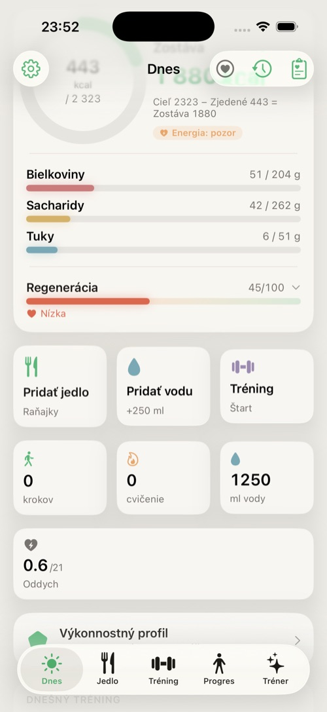
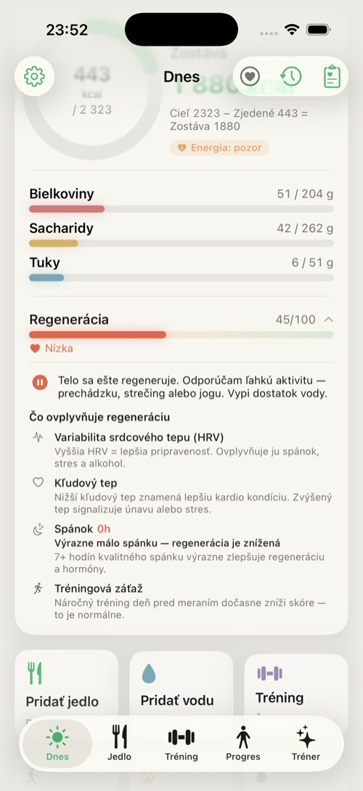
Poznámka — netreba Apple Watch. Skóre regenerácie aj všetky zdravotné metriky (HRV, tepová frekvencia, spánok, SpO₂…) Subten číta z Apple Health, nie priamo z hodiniek. Zdrojom môže byť čokoľvek, čo tieto dáta do Apple Health zapisuje — Apple Watch, Garmin, Oura, Whoop, iné náramky či prstene, alebo aj samotný iPhone (kroky, spánok). Ak v Apple Health žiadne také dáta nie sú, lišta Regenerácia ukáže –/100, krátke vysvetlenie a tlačidlo Prepojiť Apple Health (alebo Otvoriť Nastavenia).
Karta Jedlo je váš denník: všetko, čo zjete a vypijete, usporiadané podľa jedál (Raňajky, Desiata, Obed, Olovrant, Večera), s dennými súčtami voči vašim cieľom — vrátane vlákniny.
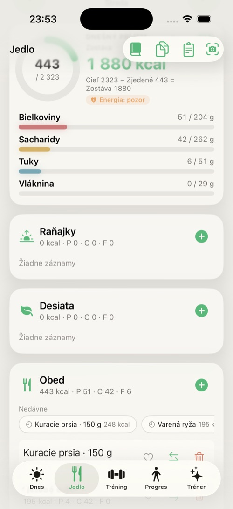
| Spôsob | Ako | Dostupnosť |
|---|---|---|
| Vyhľadávanie | Napíšte názov, vyberte výsledok, nastavte množstvo. Prílohy môžete pridať v tom istom kroku. | Free |
| AI odhad výživy | Vo vyhľadávaní opíšte jedlo vlastnými slovami (napr. „kuracie prsia 150g“); AI okamžite odhadne kalórie a makrá, ktoré pred pridaním skontrolujete. | Premium |
| Čiarový kód | Namierte fotoaparát na čiarový kód; produkt sa načíta z databázy Open Food Facts. | Free |
| AI sken fotografie | Odfoťte svoj tanier (alebo vyberte z galérie); AI identifikuje jedlo a vyplní makrá, ktoré skontrolujete a potvrdíte. | Premium |
| Sken nutričnej etikety | Odfoťte etiketu; AI prečíta hodnoty. | Premium |
| Recepty | Vytvorte a uložte viaczložkové recepty (Vytvoriť recept) a zapisujte ich porcie. | Free |
| Skenovať recept z fotky | Odfoťte kuchársku knihu, screenshot webu alebo ručne písaný recept; AI vyplní názov, ingrediencie, postup a odhadne makrá. | Premium |
| Rýchle pridanie | Zadajte názov a hodnoty Na 100 g (kalórie, bielkoviny, sacharidy, tuky, vláknina), potom v časti Porcia hmotnosť, ktorú ste zjedli. Do denníka sa zapíše prepočet (riadok Spolu). | Free |
| Obľúbené / Nedávne / Časté | Opätovné zapísanie často používaných potravín jedným ťuknutím (ukladajte ikonou srdca). | Free |
Tip: Fotoskenovanie funguje aj offline — skeny sa zaradia do fronty a spracujú sa, keď budete znova online. Banner zobrazuje čakajúce a neúspešné skeny; ťuknutím naň otvoríte frontu skenov.
Tip pre najlepší výsledok: Skener nemá režimy na prepínanie — čiarový kód rozpozná sám, keď naň namierite, a po odfotení AI sama zistí, či je na fotke jedlo alebo etiketa (riadok Čiarový kód · Etiketa · Jedlo pod spúšťou je len nápoveda). Ak sa produkt nenájde podľa čiarového kódu (okno Produkt nebol nájdený), namierte fotoaparát na výživovú tabuľku (hodnoty na 100 g alebo na porciu) a ťuknite na Odfotiť obal (Premium). AI z nej prečíta makrá a doplní ich za vás — spoľahlivejšie než odhad z fotky taniera. Tlačidlo Pridať manuálne otvorí Rýchle pridanie s už vyplneným čiarovým kódom.
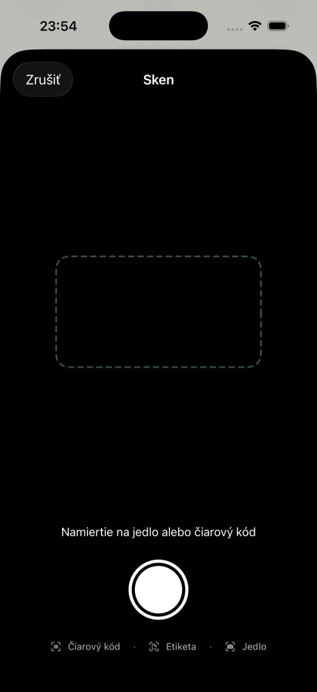
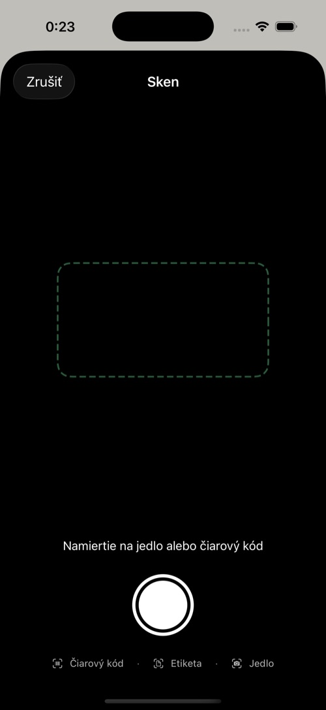
Ťuknutím na ktorýkoľvek riadok potraviny ho upravíte: zmeňte gramy krokovačom ±10 g alebo predvoľbami (50/100/150/200/300 g), prípadne makrá úplne prepíšte. Ikony priamo na riadku záznam uložia do obľúbených (srdce), presunú do iného jedla (šípky) alebo vymažú (kôš, s potvrdením). Podržaním prsta na riadku otvoríte menu Skopírovať do dneška a Zobraziť detail.
Panel nástrojov → Jedálniček po ťuknutí na Vygenerovať vytvorí plán 5 jedál na celý deň podľa vašich aktuálnych cieľov. Do poľa Preferencie (voliteľné) môžete napísať napr. „ázijská kuchyňa, bez mlieka“. Jednotlivé jedlá môžete Vymeniť alebo otvoriť ich Detail a uložiť do receptov. Tlačidlo Pridať plán do dňa plán zapíše a Pridať do nákupu vytvorí Nákupný zoznam s ingredienciami.
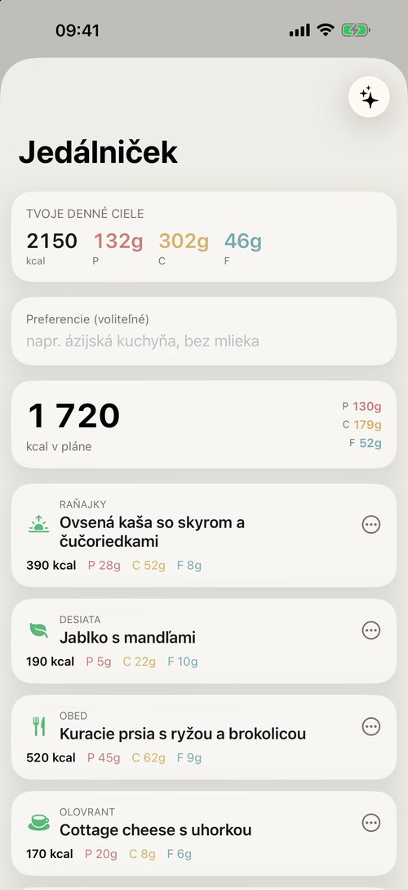
Karta Tréning obsahuje váš plán, vaše tréningy a históriu. Má štyri podkarty: Môj plán, Posilňovňa, Šport a Knižnica.
Váš aktívny plán: banner na pokračovanie rozbehnutého tréningu, týždenný pás, dnešný tréning, sekcia tréningov z Apple Watch, ktoré môžete importovať, týždenné štatistiky a história tréningov. Tlačidlom + vľavo hore môžete Pridať aktivitu (ručne zapísať kardio) alebo Vytvoriť plán.
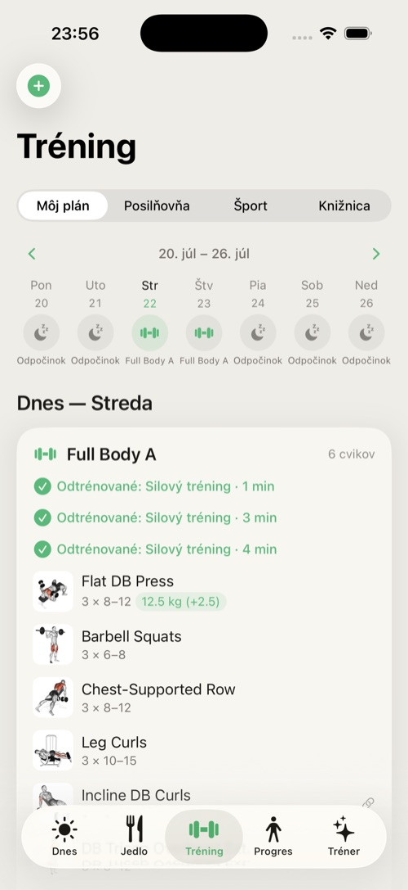
Spustením tréningu sa otvorí živá obrazovka: cviky so sériami a opakovaniami, časovač odpočinku (±15 s alebo Preskočiť) a Live Activity na zamknutej obrazovke a v Dynamic Islande s tlačidlami Séria hotová a Preskočiť prestávku, takže tréning ovládate bez odomykania. Prestávky medzi sériami môžete vypnúť alebo im nastaviť dĺžku v Nastavenia → Tréning (Prestávky medzi sériami, Dĺžka prestávky; predvolene Podľa cviku). Dokončenie tréningu ho zaznamená do histórie a (ak je to povolené) do Apple Health; nové osobné rekordy sa rozpoznajú automaticky.
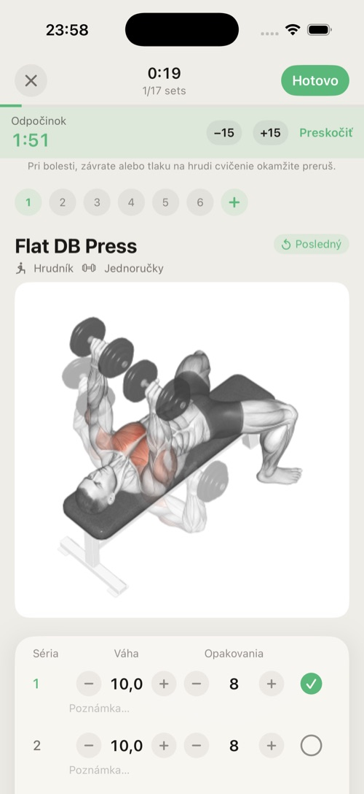
Bez Premium tieto podkarty zobrazujú kartu s ponukou predplatného.
Knižnica cvikov: filtrovanie podľa svalovej skupiny, animované ukážky, pokyny k technike a vytváranie vlastných cvikov.
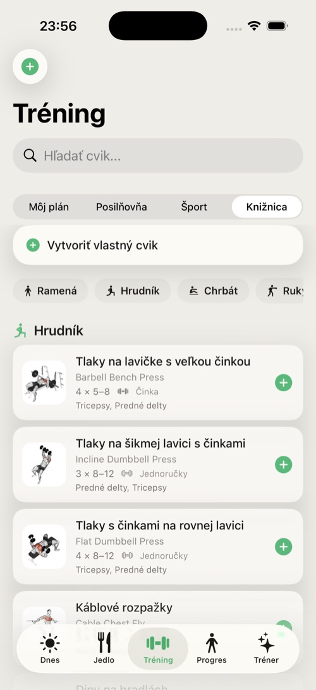
Poznámka: Tréningový modul obsahuje upozornenie ku cvičeniu — Subten poskytuje odporúčania, nie lekárske rady. Prestaňte s každým cvikom, ktorý spôsobuje bolesť.
Karta Progres sleduje výsledok: váhu, trend, zloženie tela, miery a fotografie.
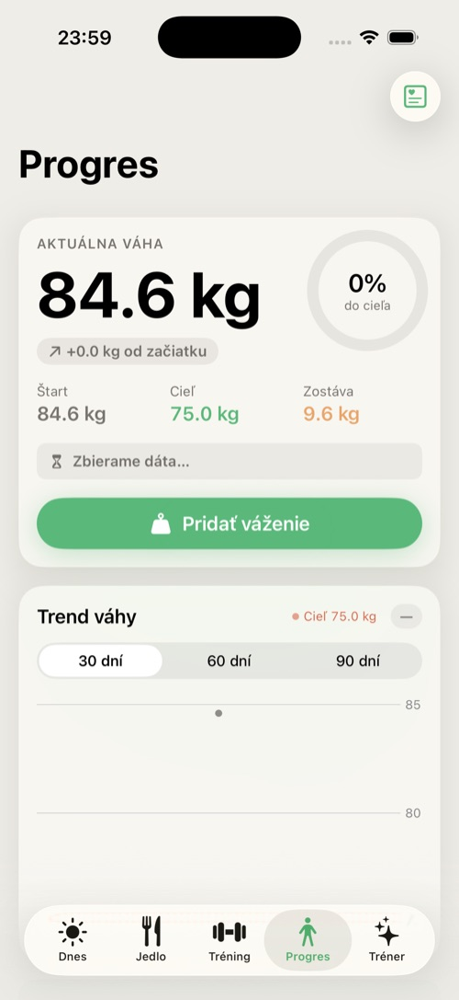
Karta Tréner je váš AI mentor: chat, ktorý pozná vaše dáta, a štyri dlaždice na jedno ťuknutie. Vysvetľuje, navrhuje a — s vaším potvrdením — koná.
Poznámka: Ako vyžaduje AI Act EÚ, Tréner oznamuje, že komunikujete s AI mentorom. Nie je lekár, výživový poradca ani tréner; so zdravotnými problémami sa obráťte na odborníka. Pod upozornením je odkaz Zdroje (aj v ponuke ✦ vpravo hore → Veda a zdroje) so zoznamom športovo-vedeckých a zdravotníckych zdrojov, z ktorých Tréner vychádza.
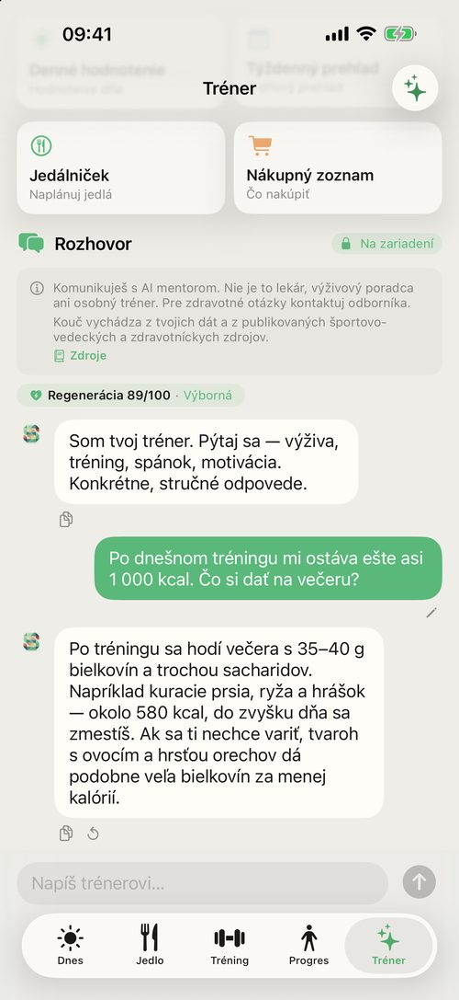
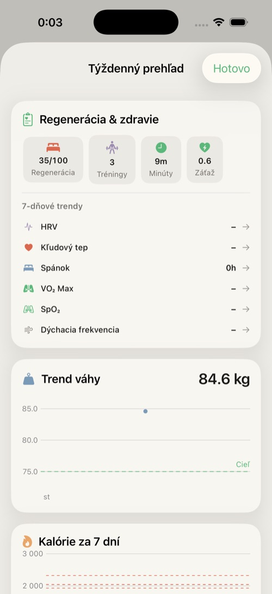
Textové funkcie Trénera (chat, denné hodnotenie, týždenný prehľad, analýza plateau) dokáže Subten spracovať priamo na vašom iPhone — bez odoslania do cloudu. Nie je to predvolené: model si musíte raz zapnúť a stiahnuť (pozri nižšie) a potrebujete Premium.
Ako to spoznáte v chate: keď Tréner odpovedá modelom v telefóne, vpravo od nadpisu Rozhovor je odznak so zámkom a nápisom „Na zariadení”. Keď tento odznak nie je, odpovede spracúva cloud. Jednoduché pravidlo: zámok = na zariadení, bez zámku = cloud. (Výnimka: ak lokálne generovanie zlyhá a Subten ticho prepne na cloud, odznak zostáva zobrazený.)
Lokálny model je dostupný len na iPhonoch so 6 GB RAM a viac; na iPhonoch so 6 GB sú odpovede pomalšie. Na slabších zariadeniach (menej ako 6 GB) Tréner používa vždy cloud, sekcia AI v telefóne sa v Nastaveniach nezobrazí a odznak „Na zariadení” sa neukáže nikdy.
Aby fungovala AI na zariadení, potrebuje Subten jazykový model (približne 3,4 GB; presnú veľkosť aplikácia ukáže vopred). Doučovací adaptér je súčasťou aplikácie, ale základný model sa nestiahne, kým ho sami nezapnete:
Keď je model zapnutý a pripravený, Subten sa rozhoduje automaticky — nemusíte nič prepínať. Lokálny model sa použije, keď sú splnené všetky tri podmienky naraz:
Vtedy je pri nadpise Rozhovor odznak Na zariadení a požiadavka sa nespracúva v cloude. Vo všetkých ostatných prípadoch sa použije cloud (OpenRouter API):
| Funkcia | Kde beží |
|---|---|
| Chat (vrátane zapisovania jedla/aktivity), denné hodnotenie, týždenný prehľad, analýza plateau | Lokálne* |
| Sken jedla z fotky, sken etikety a receptu | Vždy cloud |
| AI jedálniček | Vždy cloud |
| AI odhad jedla z textu | Lokálne, ak je zapnutý prepínač AI odhad jedla v telefóne (na iPhonoch s 8 GB RAM predvolene); nepoužiteľný výsledok prevezme cloud. Inak cloud. |
| Model nie je zapnutý alebo ešte nie je pripravený | Cloud |
* Ak lokálne generovanie zlyhá, Subten ticho prepne na cloud, aby ste dostali odpoveď (neplatí v Súkromnom režime).
V Nastavenia → AI v telefóne nájdete prepínač Súkromný režim: AI len na zariadení. Dá sa zapnúť, až keď máte zapnutý Model AI v zariadení (vypnutím modelu sa vypne aj Súkromný režim). Bežné správanie už aj tak uprednostňuje zariadenie; tento prepínač navyše zakáže prepnutie na cloud pre chat a hodnotenia Trénera — ak by lokálny model nemohol odpovedať, radšej zobrazí poctivú chybu, než by dáta poslal do cloudu. Keď je model pripravený, chat a hodnotenia fungujú aj bez internetu.
Aj v súkromnom režime cloudové funkcie ostávajú v cloude: sken fotky jedla, etikety a receptu a AI jedálniček — tie bez cloudu jednoducho nebežia. AI odhad jedla z textu beží v telefóne len so zapnutým prepínačom AI odhad jedla v telefóne; nepoužiteľný výsledok aj vtedy prevezme cloud. Vaše fotografie pokroku sa neodosielajú nám ani AI, v žiadnom režime.
Tréner je funkcia Premium. Bez Premium kartu otvoríte, ale po odoslaní správy sa v chate zobrazí karta AI tréner je súčasťou Premium s tlačidlom Odomknúť Premium; denné hodnotenie a týždenný prehľad namiesto AI textu oznámia, že AI funkcie sú súčasťou Premium.
Táto kapitola vysvetľuje z pohľadu používateľa, ako Subten nastavuje váš denný cieľ a ako pracuje s trendom vašej váhy.
Kým za posledné 3 týždne nemáte aspoň 3 váženia (prvé z nich aspoň 14 dní staré) a aspoň 10 dní so zapísaným jedlom, karta Dnes zobrazuje banner Kalibrujeme tvoje ciele (dá sa zavrieť). Počiatočné ciele sú zámerne konzervatívne.
Denný cieľ kalórií a makier vypočíta Subten z vášho profilu — pri onboardingu a znova vždy, keď v Nastavenia → Profil a ciele zmeníte napríklad váhu, cieľ, tempo alebo aktivitu (so zapnutým prepínačom Auto) a ťuknete na Uložiť zmeny. Zo zapísaného jedla a vážení sa cieľ v tejto verzii sám neprepočítava — keď sa vaša váha výrazne zmení, aktualizujte ju v profile. Bezpečnostné poistky:
Odhad času do cieľa nájdete na karte Progres v hlavnej karte Aktuálna váha. Prepočítava sa z nameraného trendu vážení za posledných 14 dní a môže ukazovať Ešte X váženia za 14 dní a ukážem odhad cieľa, Váž sa ďalej — odhad cieľa o X dní, Zbierame dáta…, Zatiaľ bez jasného trendu, Cieľ dosiahnutý alebo dátum (Cieľ ~…). Ak by aktuálny trend trval dlhšie ako približne dva roky, aplikácia odhad obmedzí na dva roky, namiesto toho, aby zobrazovala fikciu.
Nastavenia → Pokročilé → Životné situácie a stratégie (alebo ikona srdca vpravo hore na karte Dnes) otvorí obrazovku Životné situácie. Hore sú dočasné režimy Som chorý, Cheat day a Dovolenka (aktívny môže byť len jeden naraz), pod nimi Pokročilé stratégie:
| Stratégia | Čo robí |
|---|---|
| Cheat day | Plánovaný deň s vyšším príjmom (počet extra kcal si nastavíte); tento deň a niekoľko dní po ňom sa nezapočítavajú do rozpoznania plateau. |
| Refeed deň | Plánovaný deň s vyšším príjmom sacharidov, užitočný v dlhých fázach kalorického deficitu. |
| Diétna pauza | 7–14 dní na udržiavacích kalóriách (TDEE). |
| Plateau | Rozpozná stagnáciu váhy 14+ dní a ponúkne Plateau protokol s odporúčanými krokmi (refeed, diétna pauza alebo úprava deficitu). |
| Som chorý / Dovolenka | Dočasné režimy (oddych s pozastaveným tréningom / vyšší príjem, voľnejší režim); tieto dni a niekoľko dní po nich sa nezapočítavajú do rozpoznania plateau. |
Používanie vstavaných stratégií a režimov (namiesto náhodných dní mimo plánu) udrží vaše dáta prehľadné a rozpoznanie plateau spoľahlivejšie.
Aplikácia Subten pre Apple Watch je voliteľný doplnok — pohodlný pohľad na deň priamo na zápästí (kruhy, voda, komplikácie). Nie je podmienkou používania Subtenu: zdravotné dáta (regeneráciu, spánok, tepovú frekvenciu…) číta Subten z Apple Health nezávisle od nej, takže do Apple Health môže prispievať aj hodinky inej značky alebo iný nositeľný senzor (pozri kapitolu 11).
Domovská obrazovka na hodinkách zrkadlí váš deň:
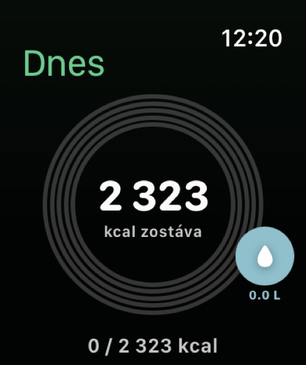
Na ciferník hodiniek si môžete pridať tri komplikácie Subten: Kalórie (zostávajúce kalórie), Regenerácia (skóre 0–100) a Voda. Na ploche iPhonu sú widgety Dnešné kalórie, Kalórie + makrá, Progres postavy a Progres postavy +; na zamknutej obrazovke Kalórie a Kalórie (riadok).
Na iPhone 15 Pro a novších môžete akčné tlačidlo (Action Button) namapovať na akciu Subtenu Pridať jedlo alebo Naskenovať jedlo. Rovnaké akcie fungujú so Siri a aplikáciou Skratky; hodinky pridávajú akciu Log water (zapíše vodu bez otvorenia aplikácie).
Subten požiada o prístup k Zdraviu v kroku 6 onboardingu systémovým dialógom iOS, kde ho povolíte alebo zamietnete; neskôr ho ovládate v Nastavenia → Zdravie, každý typ údajov samostatne.
Subten číta to, čo je v Apple Health, bez ohľadu na to, ktoré zariadenie tam dáta zapísalo. Apple Watch nie je podmienka — postačí čokoľvek, čo do Apple Health prispieva: Apple Watch, Garmin, Oura, Whoop, iné náramky a prstene, alebo samotný iPhone (kroky, spánok). Čím viac dát v Apple Health máte, tým viac podkladov majú regenerácia a odporúčania; bez nich Subten funguje ďalej, len tieto funkcie ostanú prázdne.
| Údaje | Smer |
|---|---|
| Váha | čítanie aj zápis |
| Tréningy | čítanie aj zápis (silový tréning dokončený v Subtene sa pri zapnutej synchronizácii tréningov uloží do Apple Health) |
| Kroky, aktívna energia, spánok, voda, prijaté kalórie, telesný tuk, VO₂ max | čítanie |
| HRV, pokojová tepová frekvencia | čítanie (skóre regenerácie, spolu so spánkom) |
| SpO₂, dychová frekvencia, teplota zápästia | čítanie (nočné merania v detaile regenerácie, zdravotné upozornenia) |
Zdravotné upozornenia: keď dáta ukazujú anomálie (nezvyčajné SpO₂, dychová frekvencia, tepová frekvencia, HRV, teplota alebo spánok), Subten zobrazí banner na karte Dnes. Ide o informačné upozornenia, nie diagnózy.
Tip: Ak čísla vyzerajú zdvojene (napr. tréning započítaný dvakrát), skontrolujte, či tréningy zapisuje len jedna aplikácia, alebo vypnite synchronizáciu daného typu v Nastavenia → Zdravie → Synchronizácia podľa typu.
| Funkcia | Free | Premium |
|---|---|---|
| Zapisovanie jedla: vyhľadávanie, čiarový kód, ručne, recepty, obľúbené | ✓ | ✓ |
| Dnes, Progres, série | ✓ | ✓ |
| Tréning — Môj plán, Knižnica, osobné rekordy | ✓ | ✓ |
| Synchronizácia s Apple Health, pripomienky, aplikácia pre Watch | ✓ | ✓ |
| Export a import dát | ✓ | ✓ |
| AI skenovanie fotografií jedla, etikiet a receptov; AI odhad jedla z textu | — | ✓ |
| AI jedálničky a nákupný zoznam | — | ✓ |
| AI tréner — karta Tréner (chat, denné a týždenné zhrnutia) | — | ✓ |
| Tréning — Posilňovňa a Šport (športové plány) | — | ✓ |
| Synchronizácia cez iCloud | ✓ | ✓ |
Obrazovka predplatného ponúka mesačný a ročný plán (ročný je označený Najvýhodnejšie s rozpisom ceny na mesiac). Nákupy prebiehajú cez vaše Apple ID; predplatné sa automaticky obnovuje, kým ho najneskôr 24 hodín pred koncom obdobia nezrušíte v iOS: Nastavenia → [vaše meno] → Predplatné. Obnoviť nákupy obnoví existujúce predplatné na novom zariadení.
Skúšobnú dobu ponúka App Store ako úvodnú ponuku k predplatnému: pri mesačnom pláne 1 týždeň, pri ročnom 2 týždne. Nárok na ňu máte len pri prvom predplatnom Premium na vašom Apple ID — o nároku rozhoduje App Store a presné podmienky zobrazí jeho okno ešte pred potvrdením nákupu. Počas skúšobnej doby sa vám nič neúčtuje; ak predplatné nezrušíte najneskôr 24 hodín pred jej koncom, automaticky sa zmení na platené.
Aplikácia sama žiadnu skúšobnú verziu nespúšťa — po onboardingu používate bezplatnú verziu. Keď Premium skončí, AI funkcie a podkarty Posilňovňa a Šport sa opäť uzamknú. Vaše dáta nikdy nezostanú uzamknuté: zapisovanie, pokrok a export fungujú aj bez Premium.
Nastavenia otvoríte cez ozubené koliesko na karte Dnes.
| Sekcia | Čo v nej je |
|---|---|
| Upraviť profil → Profil a ciele | Pohlavie, výška, aktuálna a cieľová váha, úroveň aktivity, cieľ, tempo, tréningové skúsenosti a Denné ciele (Auto alebo ručne) — cieľové hodnoty sa prepočítajú. |
| Predplatné | Stav Premium a aktivácia (obrazovka predplatného s tlačidlom Obnoviť nákupy). |
| AI v telefóne | Len na iPhonoch so 6 GB RAM a viac (§8.3): Model AI v zariadení (jednorazové stiahnutie cez Wi‑Fi, súčasť Premium), Súkromný režim: AI len na zariadení a AI odhad jedla v telefóne. |
| Tréning | Prestávky medzi sériami (zapnúť/vypnúť) a Dĺžka prestávky — Podľa cviku alebo 15–300 s. |
| Pripomienky | Raňajky, obed, večera, voda, tréning, váženie — každá s vlastným časom. |
| Zdravie | Hlavný prepínač plus prepínače synchronizácie pre jednotlivé typy. |
| Jednotky | kg / lbs (zobrazenie a zadávanie; váha sa vždy ukladá v kg). |
| Jazyk | Systémový jazyk alebo jeden zo šiestich jazykov: English, Slovenčina, Čeština, Deutsch, Polski, Magyar (vyžaduje reštart). Príručka je po slovensky, česky a anglicky; pri nemčine, poľštine a maďarčine sa otvorí anglická. |
| Miniatúry potravín | Emoji a ikony pri jedlách a na karte skenu (prepínač). |
| Pokročilé | Životné situácie a stratégie; Export a import údajov. |
| Spätná väzba | Odoslanie spätnej väzby vývojárovi. |
| Účet | Odhlásiť sa; Odstrániť účet a dáta. |
| AI v Subtene | Čo robia AI funkcie, prepínač Zdieľanie dát s AI, Zásady ochrany súkromia, Veda a zdroje a upozornenie. |
| O aplikácii | Verzia, Používateľská príručka, Veda a zdroje, Poďakovania a licencie. |
Banner hlási „Databáza potravín sa nepodarila načítať.“ Ťuknite na Skúsiť znova. Ak problém pretrváva, aplikáciu vynútene ukončite a znova otvorte.
Môj fotosken sa zasekol v stave „čaká“. Skeny sa offline radia do fronty a spracujú sa automaticky, keď ste online. Cez banner otvorte frontu skenov a neúspešné položky skúste znova.
Na obrazovke predplatného sa nenačítajú ceny. Cena nedostupná, skús neskôr znamená, že App Store neodpovedal — ťuknite na Skúsiť znova a skontrolujte pripojenie.
Moje ciele sa už týždne nezmenili. Je to v poriadku: v tejto verzii sa denný cieľ sám neprepočítava (§9.2). Keď sa vaša váha výrazne zmení, aktualizujte ju v Nastavenia → Profil a ciele (so zapnutým Auto) a ťuknite na Uložiť zmeny.
Zostáva nerastie, keď cvičím. Je to zámer — pozri energetický model (§2.2).
Kroky/váha sa nesynchronizujú. Skontrolujte Nastavenia → Zdravie: hlavný prepínač a prepínač daného typu. Potom skontrolujte iOS Nastavenia → Súkromie a bezpečnosť → Zdravie → Subten.
Zmenil som jazyk, ale aplikácia je zmiešaná. Reštartujte aplikáciu — zmena jazyka to vyžaduje.
Karta Tréner zobrazuje len kartu na odomknutie. AI tréner je súčasťou Premium; predplaťte si ho (skúšobnú dobu ponúka App Store, §12.3). Ak Premium máte, ťuknite na obrazovke predplatného na Obnoviť nákupy.
Nemôžem vybrať svoj dátum narodenia. Subten je 18+; výber dátumu to vynucuje.
Zmazanie účtu zlyhalo. Potrebujete pripojenie na internet (musí sa vymazať aj kópia na serveri). Skúste to znova online; ak problém pretrváva, kontaktujte podporu cez Nastavenia → Spätná väzba.
| Pojem | Význam |
|---|---|
| BMR | Bazálny metabolizmus — energia spálená v úplnom pokoji. |
| TDEE | Celkový denný energetický výdaj — BMR plus všetka aktivita; vaša skutočná udržiavacia hodnota. |
| Deficit / prebytok | Jedenie pod / nad udržiavacou hodnotou — základ spaľovania tuku / naberania svalov. |
| Makrá | Bielkoviny, sacharidy, tuky (Subten sleduje aj vlákninu). |
| Rekompozícia | Spaľovanie tuku a budovanie svalov v rovnakom období. |
| Dostupnosť energie (EA) | Energia, ktorá telu zostane po tréningu; chronicky nízka EA škodí zdraviu aj adaptácii. |
| Typ dňa | Sila / Kardio / Odpočinok / Vlastný — riadi denné ciele (sacharidové cyklovanie). |
| Kalibrácia | Prvé ~2 týždne, kým nemáte dosť zapísaných dní a vážení; karta Dnes dovtedy zobrazuje banner Kalibrujeme tvoje ciele. |
| Refeed | Plánovaný deň s vyšším príjmom sacharidov v rámci diétnej fázy. |
| Diétna pauza | 7–14 dní na udržiavacích kalóriách (TDEE). |
| Séria (streak) | Na karte Dnes: počet po sebe idúcich dní, v ktorých ste zapísali aspoň jedno jedlo. Na karte Progres: Séria vážení — počet po sebe idúcich týždňov s aspoň jedným vážením. |
| HRV | Variabilita srdcovej frekvencie — ukazovateľ regenerácie čítaný z Apple Health. |
| Live Activity | Widget na zamknutej obrazovke iOS zobrazovaný počas aktívneho tréningu. |
Subten — Používateľská príručka · v1.1 · © 2026